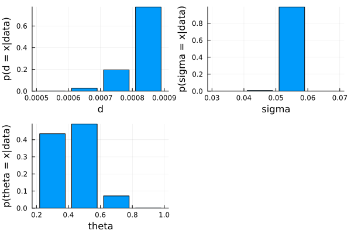
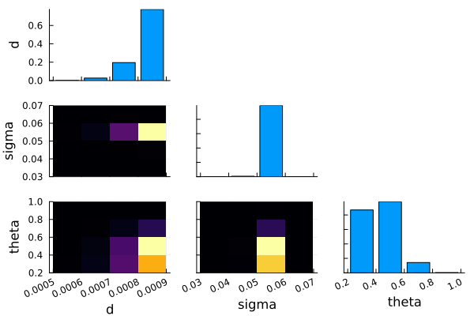

Model comparison
Comparing parameters of a single generative processes
Posterior model probability
julia> using ADDMjulia> using CSVjulia> using DataFramesjulia> using DataFramesMetajulia> using StatsPlots
Read in data from Krajbich et al. (2010)
julia> krajbich_data = ADDM.load_data_from_csv("../../../data/Krajbich2010_behavior.csv", "../../../data/Krajbich2010_fixations.csv")Dict{String, Vector{ADDM.Trial}} with 10 entries: "14" => [Trial(-1, 2234, 2, 0, Number[2, 1], Number[399, 737], #undef, #undef… "20" => [Trial(-1, 1991, 4, 2, Number[1, 2, 1], Number[339, 679, 680], #undef… "10" => [Trial(-1, 3808, 4, 2, Number[1, 2, 1, 2, 1, 2, 1], Number[98, 426, 3… "17" => [Trial(-1, 1191, 0, 0, Number[1, 2], Number[340, 638], #undef, #undef… "19" => [Trial(1, 1449, 7, 5, Number[1, 2, 1], Number[258, 677, 99], #undef, … "22" => [Trial(1, 2882, 6, 2, Number[2, 1, 2, 1, 2], Number[259, 797, 595, 57… "16" => [Trial(1, 1251, 5, 5, Number[1, 2], Number[275, 660], #undef, #undef,… "11" => [Trial(-1, 1672, 5, 2, Number[1, 2, 1, 2], Number[338, 440, 319, 380]… "13" => [Trial(1, 3848, 1, 2, Number[1, 2, 1, 2], Number[1036, 757, 997, 757]… "18" => [Trial(-1, 13456, 2, 0, Number[1, 2, 1, 2, 1, 2, 1], Number[637, 2691…
Run grid search for a single subject. This computes the nll for 64 parameter combinations for a single subject.
julia> # fn = "./data/Krajbich_grid.csv" fn = "../../../data/Krajbich_grid3.csv""../../../data/Krajbich_grid3.csv"julia> tmp = DataFrame(CSV.File(fn, delim=","))64×3 DataFrame Row │ d sigma theta │ Float64 Float64 Float64 ─────┼─────────────────────────── 1 │ 0.00055 0.035 0.3 2 │ 0.00065 0.035 0.3 3 │ 0.00075 0.035 0.3 4 │ 0.00085 0.035 0.3 5 │ 0.00055 0.045 0.3 6 │ 0.00065 0.045 0.3 7 │ 0.00075 0.045 0.3 8 │ 0.00085 0.045 0.3 ⋮ │ ⋮ ⋮ ⋮ 58 │ 0.00065 0.055 0.9 59 │ 0.00075 0.055 0.9 60 │ 0.00085 0.055 0.9 61 │ 0.00055 0.065 0.9 62 │ 0.00065 0.065 0.9 63 │ 0.00075 0.065 0.9 64 │ 0.00085 0.065 0.9 49 rows omittedjulia> param_grid = Dict(pairs(NamedTuple.(eachrow(tmp))))Dict{Int64, NamedTuple{(:d, :sigma, :theta), Tuple{Float64, Float64, Float64}}} with 64 entries: 5 => (d = 0.00055, sigma = 0.045, theta = 0.3) 56 => (d = 0.00085, sigma = 0.045, theta = 0.9) 16 => (d = 0.00085, sigma = 0.065, theta = 0.3) 20 => (d = 0.00085, sigma = 0.035, theta = 0.5) 35 => (d = 0.00075, sigma = 0.035, theta = 0.7) 55 => (d = 0.00075, sigma = 0.045, theta = 0.9) 60 => (d = 0.00085, sigma = 0.055, theta = 0.9) 30 => (d = 0.00065, sigma = 0.065, theta = 0.5) 19 => (d = 0.00075, sigma = 0.035, theta = 0.5) 32 => (d = 0.00085, sigma = 0.065, theta = 0.5) 49 => (d = 0.00055, sigma = 0.035, theta = 0.9) 6 => (d = 0.00065, sigma = 0.045, theta = 0.3) 45 => (d = 0.00055, sigma = 0.065, theta = 0.7) 44 => (d = 0.00085, sigma = 0.055, theta = 0.7) 9 => (d = 0.00055, sigma = 0.055, theta = 0.3) 31 => (d = 0.00075, sigma = 0.065, theta = 0.5) 64 => (d = 0.00085, sigma = 0.065, theta = 0.9) 61 => (d = 0.00055, sigma = 0.065, theta = 0.9) 29 => (d = 0.00055, sigma = 0.065, theta = 0.5) ⋮ => ⋮julia> my_likelihood_args = (timeStep = 10.0, approxStateStep = 0.01)(timeStep = 10.0, approxStateStep = 0.01)julia> subj_data = krajbich_data["18"]100-element Vector{ADDM.Trial}: ADDM.Trial(-1, 13456, 2, 0, Number[1, 2, 1, 2, 1, 2, 1], Number[637, 2691, 597, 1595, 1655, 4724, 638], #undef, #undef, #undef) ADDM.Trial(-1, 6881, 8, 8, Number[1, 2, 1, 2, 1], Number[797, 818, 1471, 2731, 538], #undef, #undef, #undef) ADDM.Trial(1, 3420, 3, 3, Number[1, 2, 1, 2], Number[577, 1217, 837, 558], #undef, #undef, #undef) ADDM.Trial(1, 5435, 4, 3, Number[1, 2, 1, 2, 1, 2], Number[558, 637, 678, 1794, 957, 499], #undef, #undef, #undef) ADDM.Trial(-1, 3374, 8, 5, Number[1, 2, 1, 2, 1], Number[538, 897, 717, 539, 360], #undef, #undef, #undef) ADDM.Trial(-1, 6397, 5, 0, Number[1, 2, 1, 2, 1], Number[577, 1515, 939, 1276, 1773], #undef, #undef, #undef) ADDM.Trial(-1, 5665, 5, 5, Number[1, 2, 1, 2, 1, 2], Number[419, 1554, 797, 697, 1016, 956], #undef, #undef, #undef) ADDM.Trial(-1, 5557, 4, 5, Number[1, 2, 1, 2, 1], Number[520, 1194, 1276, 1576, 778], #undef, #undef, #undef) ADDM.Trial(-1, 4688, 9, 5, Number[1, 2, 1, 2, 1], Number[1953, 757, 478, 583, 693], #undef, #undef, #undef) ADDM.Trial(-1, 8984, 6, 2, Number[1, 2, 1, 2, 1, 2, 1, 2, 1], Number[378, 1096, 1376, 1953, 518, 937, 638, 1297, 540], #undef, #undef, #undef) ⋮ ADDM.Trial(-1, 1011, 8, 6, Number[1, 2], Number[259, 538], #undef, #undef, #undef) ADDM.Trial(1, 2572, 5, 7, Number[1, 2, 1, 2], Number[458, 499, 897, 480], #undef, #undef, #undef) ADDM.Trial(1, 2047, 2, 6, Number[1, 2, 1, 2], Number[180, 577, 897, 203], #undef, #undef, #undef) ADDM.Trial(1, 4371, 4, 3, Number[1, 2, 1, 2, 1, 2], Number[259, 218, 498, 2232, 500, 421], #undef, #undef, #undef) ADDM.Trial(-1, 4315, 6, 6, Number[1, 2, 1, 2, 1], Number[319, 577, 2352, 681, 80], #undef, #undef, #undef) ADDM.Trial(-1, 3592, 7, 5, Number[1, 2, 1, 2], Number[220, 916, 677, 1495], #undef, #undef, #undef) ADDM.Trial(1, 1045, 6, 9, Number[1, 2], Number[220, 597], #undef, #undef, #undef) ADDM.Trial(-1, 2971, 6, 5, Number[1, 2, 1, 2, 1], Number[179, 1475, 575, 418, 41], #undef, #undef, #undef) ADDM.Trial(-1, 3023, 5, 8, Number[1, 2, 1, 2, 1], Number[200, 457, 957, 1057, 99], #undef, #undef, #undef)julia> best_pars, nll_df, model_posteriors = ADDM.grid_search(subj_data, ADDM.aDDM_get_trial_likelihood, param_grid, Dict(:η=>0.0, :barrier=>1, :decay=>0, :nonDecisionTime=>0, :bias=>0.0), likelihood_args=my_likelihood_args, return_model_posteriors = true)(Dict{Symbol, Real}(:nonDecisionTime => 0, :bias => 0.0, :d => 0.00085, :barrier => 1, :sigma => 0.055, :theta => 0.5, :decay => 0, :η => 0.0, :nll => 689.5526924724633), 64×4 DataFrame Row │ d sigma theta nll │ Float64 Float64 Float64 Float64 ─────┼──────────────────────────────────── 1 │ 0.00055 0.045 0.3 702.889 2 │ 0.00085 0.045 0.9 702.251 3 │ 0.00085 0.065 0.3 700.446 4 │ 0.00085 0.035 0.5 728.248 5 │ 0.00075 0.035 0.7 734.463 6 │ 0.00075 0.045 0.9 703.184 7 │ 0.00085 0.055 0.9 695.636 8 │ 0.00065 0.065 0.5 702.858 ⋮ │ ⋮ ⋮ ⋮ ⋮ 58 │ 0.00075 0.055 0.9 696.333 59 │ 0.00065 0.035 0.3 736.227 60 │ 0.00065 0.055 0.3 692.861 61 │ 0.00065 0.035 0.5 736.226 62 │ 0.00065 0.055 0.5 693.202 63 │ 0.00075 0.055 0.5 691.081 64 │ 0.00065 0.055 0.7 694.802 49 rows omitted, Dict(5 => 6.336809352538163e-7, 56 => 1.1995792633110298e-6, 16 => 7.298536362522936e-6, 20 => 6.146094996063664e-18, 35 => 1.2289789596069789e-20, 55 => 4.718950147813461e-7, 60 => 0.0008950027439783302, 30 => 6.539032842727082e-7, 19 => 2.248462661533098e-19, 32 => 9.629476127762702e-6…))
Individual parameter posteriors
Merge model posteriors with the model parameters they refer to. This creates a dataframe instead of the model_posteriors dictionary that is easier to make plots with.
julia> posteriors_df = DataFrame()0×0 DataFramejulia> for (k, v) in param_grid cur_row = DataFrame([v]) cur_row.posterior = [model_posteriors[k]] append!(posteriors_df, cur_row) end
Plot model posteriors. Note the use of @chain and other operations such as @rsubset etc. for dplyr like functionality in Julia through DataFrameMeta.jl.
Note also that we're only plotting the posteriors for models that have a meaningful amount of probability mass instead of all the 64 models that were tested.
julia> plot_df = @chain posteriors_df begin @rsubset :posterior > 1e-10 @rtransform :x_label = "d: " * string(:d) * ", \nσ: " * string(:sigma) * ", \nθ: " * string(:theta) @orderby -:posterior end48×5 DataFrame Row │ d sigma theta posterior x_label ⋯ │ Float64 Float64 Float64 Float64 String ⋯ ─────┼────────────────────────────────────────────────────────────────────────── 1 │ 0.00085 0.055 0.5 0.392581 d: 0.00085, \nσ: 0.055, \nθ: 0.5 ⋯ 2 │ 0.00085 0.055 0.3 0.321245 d: 0.00085, \nσ: 0.055, \nθ: 0.3 3 │ 0.00075 0.055 0.3 0.0950647 d: 0.00075, \nσ: 0.055, \nθ: 0.3 4 │ 0.00075 0.055 0.5 0.0851215 d: 0.00075, \nσ: 0.055, \nθ: 0.5 5 │ 0.00085 0.055 0.7 0.0547531 d: 0.00085, \nσ: 0.055, \nθ: 0.7 ⋯ 6 │ 0.00065 0.055 0.3 0.0143631 d: 0.00065, \nσ: 0.055, \nθ: 0.3 7 │ 0.00075 0.055 0.7 0.0141713 d: 0.00075, \nσ: 0.055, \nθ: 0.7 8 │ 0.00065 0.055 0.5 0.0102092 d: 0.00065, \nσ: 0.055, \nθ: 0.5 ⋮ │ ⋮ ⋮ ⋮ ⋮ ⋮ ⋱ 42 │ 0.00055 0.045 0.7 7.54304e-8 d: 0.00055, \nσ: 0.045, \nθ: 0.7 ⋯ 43 │ 0.00065 0.045 0.9 7.34053e-8 d: 0.00065, \nσ: 0.045, \nθ: 0.9 44 │ 0.00075 0.065 0.9 4.61411e-8 d: 0.00075, \nσ: 0.065, \nθ: 0.9 45 │ 0.00055 0.065 0.7 2.71958e-8 d: 0.00055, \nσ: 0.065, \nθ: 0.7 46 │ 0.00065 0.065 0.9 1.70487e-8 d: 0.00065, \nσ: 0.065, \nθ: 0.9 ⋯ 47 │ 0.00055 0.045 0.9 4.51506e-9 d: 0.00055, \nσ: 0.045, \nθ: 0.9 48 │ 0.00055 0.065 0.9 4.03303e-9 d: 0.00055, \nσ: 0.065, \nθ: 0.9 33 rows omittedjulia> @df plot_df bar(:x_label, :posterior, legend = false, xrotation = 45, ylabel = "p(model|data)",bottom_margin = (5, :mm))Plot{Plots.GRBackend() n=1}

Marginal posteriors for parameters
Compute and plot posteriors for each parameter
julia> param_posteriors = ADDM.marginal_posteriors(param_grid, model_posteriors)3-element Vector{Any}: 4×2 DataFrame Row │ d posterior_sum │ Float64 Float64 ─────┼──────────────────────── 1 │ 0.00055 0.00197559 2 │ 0.00085 0.775586 3 │ 0.00075 0.195637 4 │ 0.00065 0.0268011 4×2 DataFrame Row │ sigma posterior_sum │ Float64 Float64 ─────┼──────────────────────── 1 │ 0.045 0.00696685 2 │ 0.065 2.82679e-5 3 │ 0.035 9.57592e-18 4 │ 0.055 0.993005 4×2 DataFrame Row │ theta posterior_sum │ Float64 Float64 ─────┼──────────────────────── 1 │ 0.3 0.434736 2 │ 0.9 0.00147894 3 │ 0.5 0.49233 4 │ 0.7 0.0714554julia> plot_array = Any[]Any[]julia> for plot_df in param_posteriors x_lab = names(plot_df)[1] cur_plot = @df plot_df bar(plot_df[:, x_lab], :posterior_sum, leg = false, ylabel = "p(" * x_lab * " = x|data)", xlabel = x_lab ) push!(plot_array, cur_plot) endjulia> plot(plot_array...)Plot{Plots.GRBackend() n=3}
Compute and plot marginal posteriors with heatmaps
julia> marginal_posteriors = ADDM.marginal_posteriors(param_grid, model_posteriors, true)6-element Vector{Any}: 4×2 DataFrame Row │ d posterior_sum │ Float64 Float64 ─────┼──────────────────────── 1 │ 0.00055 0.00197559 2 │ 0.00085 0.775586 3 │ 0.00075 0.195637 4 │ 0.00065 0.0268011 4×2 DataFrame Row │ sigma posterior_sum │ Float64 Float64 ─────┼──────────────────────── 1 │ 0.045 0.00696685 2 │ 0.065 2.82679e-5 3 │ 0.035 9.57592e-18 4 │ 0.055 0.993005 4×2 DataFrame Row │ theta posterior_sum │ Float64 Float64 ─────┼──────────────────────── 1 │ 0.3 0.434736 2 │ 0.9 0.00147894 3 │ 0.5 0.49233 4 │ 0.7 0.0714554 16×3 DataFrame Row │ d sigma posterior_sum │ Float64 Float64 Float64 ─────┼───────────────────────────────── 1 │ 0.00055 0.045 1.10675e-6 2 │ 0.00085 0.045 0.00609219 3 │ 0.00085 0.065 1.91349e-5 4 │ 0.00085 0.035 9.17379e-18 5 │ 0.00075 0.035 3.97713e-19 6 │ 0.00075 0.045 0.000826574 7 │ 0.00085 0.055 0.769475 8 │ 0.00065 0.065 1.70294e-6 9 │ 0.00055 0.035 1.22467e-23 10 │ 0.00065 0.045 4.69828e-5 11 │ 0.00055 0.065 2.53055e-7 12 │ 0.00055 0.055 0.00197423 13 │ 0.00075 0.065 7.17705e-6 14 │ 0.00065 0.055 0.0267524 15 │ 0.00075 0.055 0.194803 16 │ 0.00065 0.035 4.40377e-21 16×3 DataFrame Row │ d theta posterior_sum │ Float64 Float64 Float64 ─────┼───────────────────────────────── 1 │ 0.00055 0.3 0.00111171 2 │ 0.00085 0.9 0.000896282 3 │ 0.00085 0.3 0.323762 4 │ 0.00085 0.5 0.395917 5 │ 0.00075 0.7 0.0142119 6 │ 0.00075 0.9 0.000446247 7 │ 0.00065 0.5 0.0102286 8 │ 0.00075 0.5 0.0855065 9 │ 0.00055 0.9 1.71243e-5 10 │ 0.00065 0.3 0.0143895 11 │ 0.00055 0.7 0.000168505 12 │ 0.00085 0.7 0.0550113 13 │ 0.00055 0.5 0.000678258 14 │ 0.00065 0.7 0.00206368 15 │ 0.00065 0.9 0.000119287 16 │ 0.00075 0.3 0.0954724 16×3 DataFrame Row │ sigma theta posterior_sum │ Float64 Float64 Float64 ─────┼───────────────────────────────── 1 │ 0.045 0.3 0.00293996 2 │ 0.045 0.9 1.74939e-6 3 │ 0.065 0.3 1.15284e-5 4 │ 0.035 0.5 6.37305e-18 5 │ 0.035 0.7 2.13653e-19 6 │ 0.055 0.9 0.00147704 7 │ 0.065 0.5 1.35042e-5 8 │ 0.035 0.9 1.38075e-22 9 │ 0.065 0.7 3.0881e-6 10 │ 0.055 0.7 0.0711537 11 │ 0.055 0.3 0.431784 12 │ 0.065 0.9 1.47174e-7 13 │ 0.035 0.3 2.98907e-18 14 │ 0.045 0.5 0.00372656 15 │ 0.045 0.7 0.000298579 16 │ 0.055 0.5 0.48859julia> ADDM.margpostplot(marginal_posteriors)Plot{Plots.GRBackend() n=6}

Comparing different generative processes
- Estimate best fitting parameters separately for each process
- Is this necessary? Do uou only need trial likelihoods and priors for each model (that are indexed in a way that leaves no ambiguity about which model generated with trial likelihoods)
- You can't compute marginal parameter distributions across different generative processes (I don't think) but you could compare the two best fitting parameter combinations from one generative process to an entirely different generative process, as long as you have the trial likelihoods for each model.
- Compute trial likelihoods plugging in best fitting parameters
- Compute model posterior using trial likelihoods
- Does this violate any assumptions?
More?
- True vs. simulated data
- RT distributions conditional on choice
- Cross-validation?